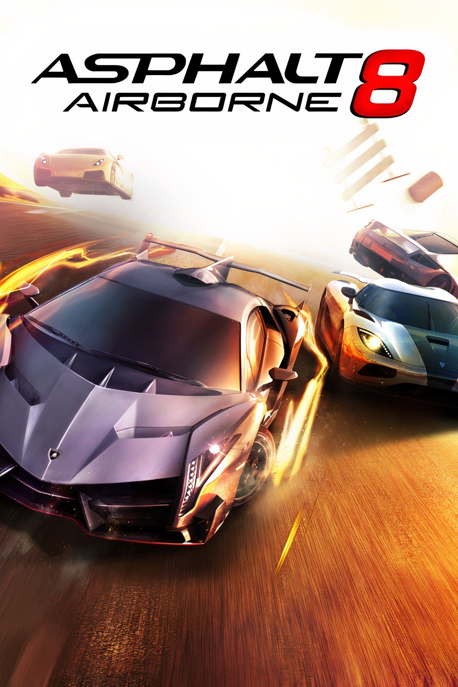

|  | |
| Playtime | Not Played |
| Last Activity | Never |
| Added | 5/3/2025 2:12:39 |
| Modified | 5/3/2025 2:13:44 |
| Completion Status | Not Played |
| Library | Playnite |
| Source | Steam |
| Platform | $PC (Windows) |
| Release Date | 1/15/2014 |
| Community Score | |
| Critic Score | 91 |
| User Score | |
| Genre | Action Racing |
| Developer | Gameloft Iberica Gameloft Vietnam |
| Publisher | Gameloft |
| Feature | Controller Support Full Controller Support Multiplayer Single Player Touchscreen optimised |
| Links | PCGamingWiki Official site HowLongToBeat IGDB MobyGames Wikipedia |
| Tag | [HLTB] 10 to 20 hours Automobile Contemporary Direct control Europe Real-Time South America Stylized Third Person |
Asphalt 8: Airborne is a 2013 racing video game developed by Gameloft Barcelona and published by Gameloft. It is the eight major game in the Asphalt series. It was released on August 22, 2013, for iOS and Android, on November 13 for Windows 8 and Windows Phone 8, on January 15, 2014, for BlackBerry 10, and on April 5, 2015 for Tizen. Its successor, Asphalt Legends Unite (originally titled Asphalt 9: Legends), was announced on February 26, 2018. The game has about 470 million players according to its App Store description.
The gameplay is similar to that of Asphalt 7: Heat, with the player given four control options: "Tilt to steer" (auto-acceleration with movement controlled by tilting the device), "Tilt and icons" (manual acceleration via an on-screen icon, with movement controlled by tilting the device), "On-screen controls" (auto-acceleration with movement controlled by an on-screen virtual steering-wheel), and "Tap to steer" (auto-acceleration with movement controlled by tapping the side of the screen). The Windows 8.1 and Windows 10 versions feature different control schemes, including the WASD and arrow keys.
The five-star rating system with primary and secondary objectives first introduced in Asphalt 6: Adrenaline has also been used in Asphalt 7 and Asphalt 8. Three stars are awarded for finishing in first place, two for second, and one for third. Achieving secondary objectives, such as performing a given number of stunts or knocking down opponents, awards the player with two additional stars. In the Moto Blitz and Championship modes, the primary objectives must be completed to unlock the secondary objectives. Obtaining stars in an event is cumulative; players who finished first in an event without completing the secondary objectives may replay the race and obtain a five-star rating even if the primary objectives are not met.
The core gameplay is slightly different, however. As the subtitle implies, the focus of Airborne is on jumping, with tracks featuring a lot more ramps than in previous games. In addition to performing standard jumps, the player can also perform flat spins (by drifting off of a ramp) and barrel rolls (by driving off of a curved ramp). It is also possible to perform a barrel roll by driving with half the car on a normal ramp. All jumps earn a boost; the longer the airtime, the more boost earned. Destroying obstacles such as barriers and lamp posts, and hitting or near-missing traffic cars, also earns boost. Another new feature, which substitutes the "Adrenaline Mode" in Asphalt 6 and 7, is the ability to perform a "Perfect Nitro". When the player activates the boost, a small red zone appears on the boost bar. If the player activates the boost again when the boost meter is in the red zone, the boost will become stronger, lasting until the player runs out of boost, brakes, crashes, or hits a ramp.
In the initial version of the game, the career mode consisted of 180 events split into eight "seasons", which became progressively more difficult. In later versions, additional challenges and seasons were added. As of March 2020, Asphalt 8 had a total of nine seasons, excluding the "McLaren Legends Season". When the game begins, only the first season is available; later seasons must be unlocked either by earning enough stars or by purchasing a "Season Unlock" (which cannot be used to skip ahead more than one season at a time). The Great Wall update added 30 new events centered on the Great Wall of China. The Dubai update introduced a new season where only fully upgraded cars are eligible to participate, besides adding three new events centered on Dubai. The San Diego Harbor update introduced a new season featuring events where the player can participate in a 24-car race (exclusive to iOS 8), alongside several new events centered on both Dubai and the San Diego Harbor.[citation needed]
Asphalt 8 is the first game in the Asphalt series to use Game Center for achievements rather than Gameloft's own Gameloft Live. The April 2015 update added support for the Apple Watch and made it compatible only on the iPhone 5 or later models using iOS 8.2 or later through the use of Bluetooth or Wi-Fi. The October 2015 update added support for the Apple TV. Online multiplayer can be accessed both locally and globally via Wi-Fi. There is also a "World Series" online multiplayer mode, although this mode is unavailable on the iPod touch 4 and iPhone 4. Playing in multiplayer is the only way to increase a player's in-game level; a higher level results in higher credit earnings. The Multiplayer League Update in October 2016 introduced reworked multiplayer gameplay in the form of the "Multiplayer League", where players compete against each other in online multiplayer races to win exclusive rewards.
Asphalt 8: Airborne currently has more than 390 vehicles. The Dodge Dart GT is the player's starting vehicle. The list includes trucks such as the Ford F-150, supercars such as the Lamborghini Centenario, Pininfarina Battista and Koenigsegg Jesko, Formula One cars, and fictional vehicles like Gru's vehicle from the Despicable Me series, as well as a few Vision Gran Turismo cars such as the Bugatti Vision Gran Turismo (later this car was deleted from game due to licensing issues). The game also features electric vehicles like the Tesla Model S. For accuracy purposes, electric vehicles don't have internal combustion engine sounds. Instead, they possess a "wheezing" sound to emphasize the vehicles' lack of internal combustion, Since an update in August 2017, the game also features motorcycles for the first time since Asphalt 6: Adrenaline. Unlike in previous Asphalt games, the player no longer needs to obtain stars to unlock them; instead, they are available from the very start and can be bought with credits, which can also be used to upgrade them.
Asphalt 8 is the first game in the series to feature a licensed soundtrack. When playing the game, there are three selectable "stations": "bass", "neon", and "electronic". There was also a "rock" station until July 2021, when it was removed and all of its remaining tracks were merged into the "electronic" station.
Deadmau5 is one of the featured artists in the game.
The iOS version of Asphalt 8 holds an aggregate score of 91 out of 100 on Metacritic based on 18 reviews.
TouchArcade's Eric Ford gave the game a perfect score, 5 out of 5, calling it the "pinnacle" of the Asphalt series. He was particularly impressed with the new jump-focused gameplay and the graphics, arguing that "the graphics engine does a great job of imparting that sense of speed that is essential for a game that thrives on fast gameplay". His only criticism was what he perceived as a disparity between the price of some of the cars and the reward money given to the play; "as you get towards the really expensive cars, you'll notice that you don't earn quite as much money proportionally to afford what you might want." However, he saw this as a "minor complaint" and concluded by saying "the iOS platform has quietly become a haven for great racers, and Asphalt 8 looks to be leading the pack right now." AppSpy's James Gilmour also gave the game 5 out of 5, praising the controls, the range of tracks, cars and upgrades. He argued that "Asphalt 8: Airborne plays like the greatest hits compilation of arcade racers. Perhaps you enjoyed the powerslide from Out Run and Ridge Racer? Or the nitro boosts and takedown challenges from Burnout? Well, you'll find them all in Asphalt 8. The good news is that, rather than Gameloft simply ripping off aspects of other games and mashing them randomly together, the dev has managed to create a polished, adrenaline-infused racer which is way more fun than it has any right to be [...] Though Asphalt 8: Airborne's parts may be borrowed, they have been skillfully assembled to build a highly entertaining vehicle." MacLife's Andrew Hayward also awarded a perfect 5 out of 5 score, feeling the game reverses the sense of stagnation which had crept into the Asphalt series by the time of Asphalt 7, and arguing that it "essentially feels like a reboot in terms of quality. It's actually a rather amazing feat". He compared the game to Real Racing 3, praising Asphalt 8 for featuring a "real" multiplayer mode. He concluded that "what began life as a passable mobile diversion nearly a decade ago has finally blossomed into a racing experience that's frantic, hearty, and really rather impressive throughout. Asphalt 8: Airborne blurs the line between mobile and console racers, with an amazing asking price to boot, and it's easily the best racer of its kind on the App Store today."
Andrew Stevens of 148Apps scored the game 4.5 out of 5, arguing that it takes the Asphalt series "to a new height." He, too, praised the new jump-focused gameplay; "I've always had great fun with arcade racers and enjoyed the previous Asphalt entries, but something as simple as adding ramps and a few stunts to the action has really taken this series in a new direction." He concluded that "Asphalt 8: Airborne is a great addition to the series and arcade racing fans will find themselves very happy with its offerings." Gamezebo's David Oxford also awarded a score of 4.5 out of 5, praising the gameplay, the graphics, the range of cars, the level design and the use of licensed music. Although he was critical of the drifting mechanics, he concluded that "Asphalt 8: Airborne's numerous features and modes, including multiplayer, help round out this package. It's an easy recommendation for anyone who likes their racers a little more realistic than a cartoon kart racer, but with a healthy dose of over-the-top arcade action."
Pocket Gamer scored the game 9 out of 10, also giving it a "Gold Award". Reviewer Harry Slater compared the game to Real Racing 3, arguing "If Real Racing 3 is a precision instrument, then Asphalt 8: Airborne is a lump hammer [...] there's a simple arcade glory to the proceedings, which leaves you with a smile on your face after every breathtaking dash to the line. So, while Asphalt 8: Airborne might not be subtle, every second you spend in its company is exhilarating fun." He praised the level design, control options, the nitro system, and the use of shortcuts on every track. He concluded that "Asphalt 8: Airborne might not be the best-looking racer out there, and it certainly isn't the most realistic, but as an arcade blast it's hard to top. Its powerslides are that bit madder, its jumps that bit more ludicrous, and its takedowns more satisfying than its nearest competitors. This is a racer that concentrates on fun above anything else, and it hits its mark almost every time. If you're a fan of gaming with a grin on your face, then Asphalt 8: Airborne is going to be right up your street."
IGN's Steve Watts was less impressed, scoring the game 7.8 out of 10. Although he praised the graphics and gameplay, he was critical of the in-app purchase system: "By the time I reached the mid-point, the hodgepodge of car requirements felt like an unworkable maze. I constantly needed more stars, but by that point progression required me to spend a large wad of cash on a car that might only be useful for one event. I would begrudgingly buy it, earn the five stars available in that event, and then go looking for another that could slowly inch me towards the next season. Of course, Asphalt is more than happy to remind you that you can simply purchase some cars or in-game currency to speed up the process." He concluded that "Asphalt 8: Airborne is a highly polished racer with loads of content, but its pacing is slowed by aggressive gating that pushes too hard toward its in-app purchases. The later season requirements are too intrusive and the grind starts to wear thin after a while."
Asphalt 8: Airborne+ is a premium version of the game which is only available with a subscription to Apple Arcade. This version is based upon an older build of the game, featuring the older garage layout, missing certain cars, and the now-removed "Mastery" progression system. Because microtransactions have been removed from this version, players are able to unlock and fully upgrade every vehicle in the game simply by playing, which is not possible in the regular game. Fusion Coins and Tokens are also absent.